23年8月到24年6月Next.js12的性能和SEO实践
这是一份结合工作项目的文档，于在职的最后一周完成编写，留给组员，作为熟悉项目的资料和疑问的解答，其中主要围绕性能和 SEO，包含了我这段时间的实践和实践时的思考过程，以及未来优化方向的参考建议。
后面的内容会涉及到项目里页面的类型，下面是这些类型的一个概览。细分下来，unionfab.com 有下面 6 种类型的页面：
- 内部自己的页面，如首页、why-unionfab；
- 兼容 Next.js 的静态缓存（
static-cache文件夹下）的页面，使用 innerHTML 和 appendChild 兼容（<DangerouslySetInnerHTML>组件），这些页面的导航栏可以使用 Next.js 的路由，无感跳转，但是内容没有翻译； - 拼接的页面（使用 site-header-footer 拼接头尾导航栏），拼接的页面不能使用 Next.js 的路由无感跳转：
- 存在项目本地的，在
static-cache文件夹下的静态缓存的页面；- 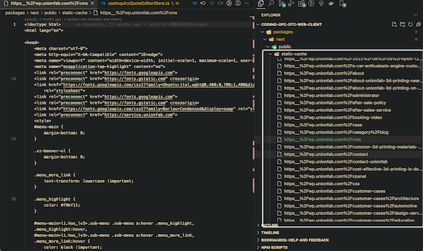
- 实时拉取 Wordpress 的博客页面；
- 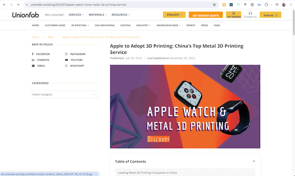
- 商城。
- 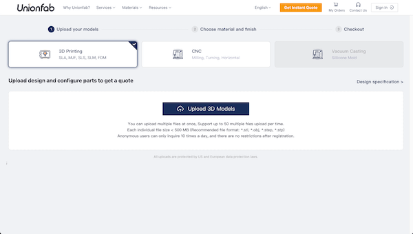
- 存在项目本地的，在
- 非 Wordpress 的博客页面，这些页面由 Cao 用 Vue 写的 CMS 管理，基本可以从导航栏的“Resources”面板下访问，目前暂时是 SSR，速度稍慢。
- 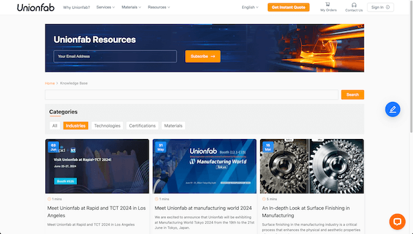
以下是基于 Next.js 12 的营销页做的实践，Next.js 14 或之后的版本可作参考。
性能
- 渲染方式从 SSR 向 SSG 迁移；
- 全路径导入依赖，缩小产包，避免
export *（桶文件）导致的摇树失效； - 延迟统计、日志脚本的加载，延迟加载 IM iframe；
- 组件库的用法优化；
- 固定图片的宽高，固定图片的比例，避免布局抖动；
- 将图片的尺寸缩放成适当大小，并且缩小图片体积；
- 图片、视频等资源的懒加载；
- 移除导航栏大量链接的 prefetch；
- 同步线性的多个请求修改为异步的 allSettled 请求；
- 移除未使用的依赖。
SSG 迁移
营销页面的 SSG
营销页中，几乎所有页面只需要动态获取 SEO 数据，原来的 SSR 在每次请求后，next 服务再向存储 SEO 的 Supabase 数据库请求 SEO 数据，会有长时间白屏问题，除了请求 SEO 数据外没有其他接口请求需要，所以替换为 SSG，将请求 SEO 的时间转移到编译期间。
Supabase 中的 SEO 数据可以由运营人员动态改动，为了避免每次改动需要开发重新打包部署，使用了增量静态生成（isr）的按需重生成，它会在更新 SEO 之后向 next 服务发送一个接口，服务器上的 next 服务会在后台生成对应最新的静态页面，而无需重新打包部署。
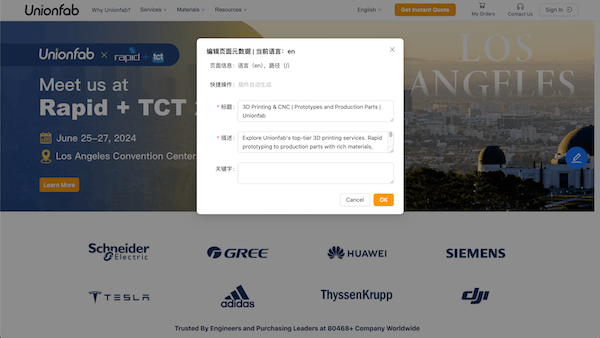
isr 按需重生成的坑：营销页有 3 个节点，法兰克福、硅谷和阿里云上部署的，isr 按需重生成只会更新一个节点，比如我在中国打开营销页，做 SEO 的更新，更新之后可能只会更新阿里云上部署的营销页的页面，另外两个节点的页面还是老页面。
isr 按需重生成的填坑方法参考：
- 找到一种方法，为不同的节点生成不同的 isr 按需重生成接口，在运营人员改动后，调用每个 isr 按需重生成接口；
- 不使用 isr 的按需重生成，就用传统的，isr 提供了定时的选项，超过了定时期，next 服务接收到了定时期之后的第一个人的访问，就重新 SSG 更新最新的页面；
- 维护一个版本数据库，客户访问到页面后检测到版本过旧，给用户提供更新按钮，点击之后做 isr 的按需重生成（这种方法比较适合商城的 SSG）；
- SEO 不是常更新数据，彻底删除编辑 SEO 信息的功能。
相关链接：
Data Fetching: Incremental Static Regeneration (ISR) | Next.js
缓存的 Wordpress 页面 SSG
缓存的 Wordpress 页面存放在 static-cache 文件夹中。
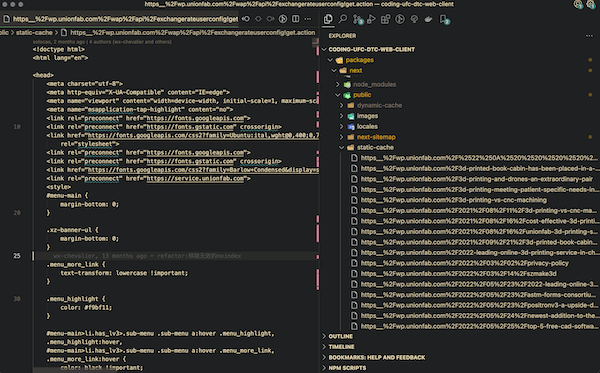
目前 static-cache 里有一部分页面通过 SSR，在每次请求的时候读取这些页面，做页面的裁剪拼接，下面是几点这种方法的问题：
- 兼容代码会破坏原项目的架构和自然逻辑，变得难维护；
- 通过裁剪兼容后的页面功能不全，不能使用 Next.js 的平滑路由跳转；
- 页面出现后，再等待一会后才出现导航，加载慢，为了提速，需要自己在 next 服务里维护一套额外缓存逻辑；
- 复杂的兼容代码，很容易导致忘记移除老代码、检查是否有重复的新代码，会出现越来越多的重复执行或重复导入资源。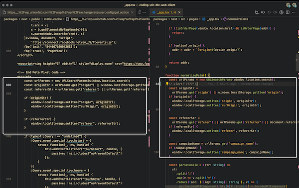
拼接的是页面的头部导航栏和尾部导航栏，这两块来自 pages/partials/site-header-footer.tsx。
目前 static-cache 里有另一部分使用 SSG，通过 innerHTML 和 appendChild 来兼容这些缓存页面，具体可以查看 <DangerouslySetInnerHTML> 组件和它的使用方式，下面有一些点要注意：
- 平滑路由会在一个浏览器窗口执行每一个访问到的 Wordpress 页面，里面的脚本也会重复执行，要考虑这些代码是否会增加窗口的内存占用，例如重复监听事件；
- 不能直接使用 React 的
dangerouslySetInnerHTML兼容，是因为这个属性不会执行字符串里的<script>标签里的脚本； <head>标签里的内容是通过 useEffect 加载到页面中的，其中包括的<title>和其他 meta 标签的加载可能会影响到 SEO。
非静态缓存到本地的 Wordpress 博客页面，线上的，不做 SSG 迁移，因为可能有更新，做了 SSG 意味着只会在打包时更新页面内容。
商城的 SSG
经过尝试，商城也可以通过上一节提到的 <DangerouslySetInnerHTML>，加入 SSG 的渲染方式。
商城本身被单独部署在另一个域名（service.unionfab.com）下，营销页会进行拼接整合，如果商城发布，营销页用 SSG 整合，同时就要也重新发布营销页。这样会复杂化发布流程，如果确实需要 SSG，可以考虑这个方法：维护一个版本数据库，客户访问到页面后检测到版本过旧，给用户提供更新按钮，点击之后做 isr 的按需重生成。
目前商城仍然是通过 SSR 拼接裁剪页面的方式，兼容到 unionfab.com 这个域名下的，用户访问商城，首先向 unionfab.com 的 next 服务请求，next 服务再向部署商城的页面请求，返回 html 给 next 服务后，再请求 site-header-footer 页面，进行页面的头尾导航栏拼贴。
全路径导入
_app.js 文件做了全路径导入的优化，把形如 @/components 之类的引入桶文件中的依赖，优化成类似 ../../components/xxx/index，优化之后缩小了 700Kb。
登录按钮组件占用产包 1Mb，优化或重构之后可以缩小大量产包体。
组件库用法优化
antd 的走马灯（轮播图）组件，切换效果从滚动改为了渐隐（effect=”fade”），提升了 cls 指标。要注意，组件某些属性不同的实现方式会导致一些性能指标问题。
展开查看轮播图渐隐效果的 GIF 图片。

比例图片的初始固定宽高
设置固定的比例宽高，避免 cls 问题，可以通过 padding 和 aspect-ratio 这两个属性设置，例如设置 1:0.75 的宽高，可以设置 padding-bottom: 75%，padding 的百分比是基于元素自身的宽度的。
展开查看比例图片在拖动浏览器窗口时变化的 GIF 图片。

缩小图片尺寸，压缩图片体积
在合适的屏幕上展示合适尺寸的图片，不能在 1980 宽的屏幕上展示原始宽度 5000 像素的图片，否则浏览器会阻塞做做图片的缩小导致局部白屏。如果只提供了一张图片，图片的尺寸不能大于最大版心宽度。其他还需考虑设备的分辨率，例如 1500px 的渲染宽度，在苹果设备上会需要 3000 实际像素的图片。
尺寸修改之后，使用类似“https://tinypng.com/”的工具进行体积压缩。
如果能提供一张图片在不同屏幕上的不同版本，可以使用 <picture> 元素结合 <source> 元素，定义 <source> 元素的 media 属性，这样浏览器会在不同屏幕上按需适配展示不同的屏幕。这种 HTML 元素的方式相比通过 CSS 媒体查询和 JS 监控屏幕宽度有几点好处：
- JS 监控很慢，要等待脚本加载；
- CSS 媒体查询需要配合
<img>的loading="lazy"才能实现懒加载，否则依然一次性全部图片加载，loading="lazy"有兼容性问题； - HTML 元素的方式最快，如果样式表和脚本加载失败，图片依然能按要求展示。
可以查看 InstaMach 站点的首页轮播图的实现方式，其中的每张图片需要提供两个版本，宽屏和窄屏的版本，并且利用了 <picture> 和 <source> 来实现。
相关链接：
资源懒加载
资源需要懒加载，例如图片可以在滚动到指定位置之后懒加载，视频在点击播放之后再加载。图片使用 Next.js 的 <Image> 组件即可懒加载。
services/3d-printing 页面在没有进行视频懒加载之前，进入这个页面至少要支付 1GB 的流量。
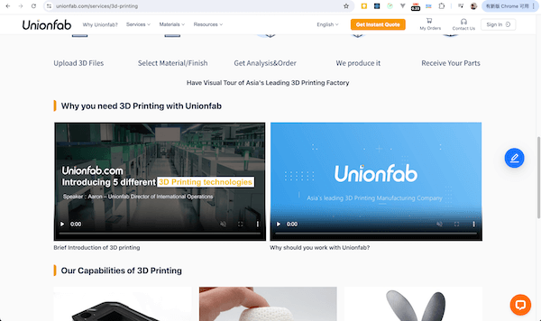
移除链接的 prefetch
使用 Next.js 的 <Link> 组件，对于 SSG 页面，默认会打开 prefetch 预请求页面。
导航栏有上百个链接，可能影响性能，所以关闭了大部分链接的预加载（prefetch）选项。
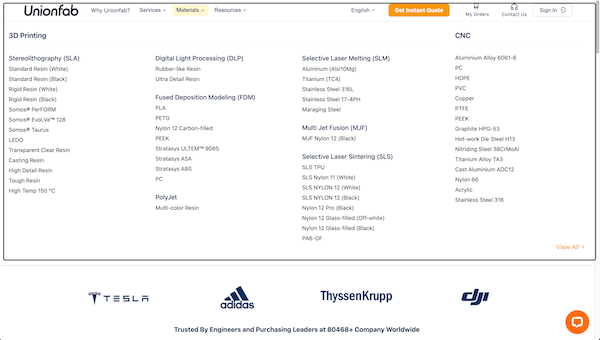
1 | <Link href="/ok" prefetch={false}>ok</Link> |
相关链接：<Link>——prefetch
await 请求
SSR 中，不使用多个同步的 await 代码，应该用 Promise.allSettled 或者 Promise.all 包裹起来，避免白屏阻塞。在 js 业务代码中，同样要避免多个线性同步的 await 代码。
SEO
- 生成结构化路径，展示面包屑组件；
- 由接口管理的 title 和 description 配合 SSG 做增量静态生成；
- 使用 canonical
<link>标签规范网址，避免用于统计的 query string 被单独收录，例如避免https://official.com?code=abc被收录； - 规范并生成多语言的 sitemap，为 sitemap 排除 noindex、301 页面；
- 为每个页面的多语言添加 alternate
<link>标签； - 对禁止抓取的网址添加 noindex
<meta>标签或响应 noindex 头； - 为图片添加
alt属性、规范页面标题结构； - 规范页面路径，启用硬 404，对旧路径实行 301 跳转；
- 点击事件跳转页面替换为
<a>标签，增加内链数量； - 性能优化。
面包屑组件（BreadcrumbList）
组件在它的文件夹下提供了详细的文档（packages/component/src/layout/BreadcrumbList/README.md）：
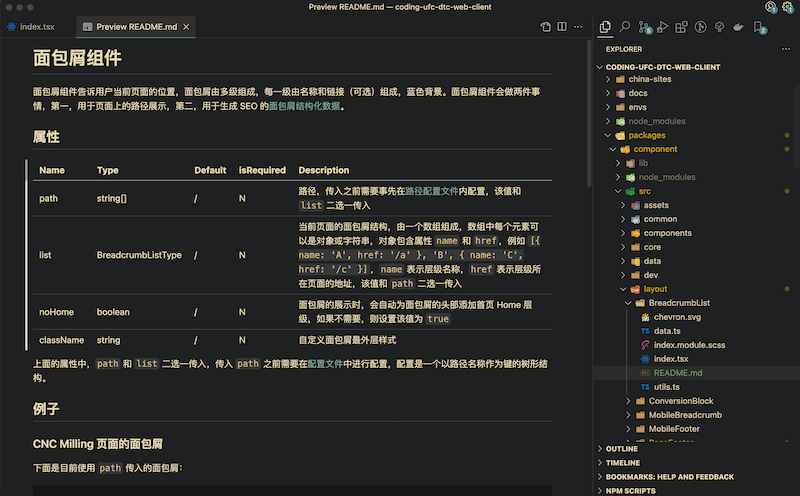
面包屑组件会做两件事情：
- 渲染用于展示给用户的面包屑的 UI；
- 生成用于 SEO 的结构化数据。
下面的图片，左边框选的蓝色部分是 UI，右边框选的数据是用于 SEO 的结构化数据，这两者会通过组件生成：
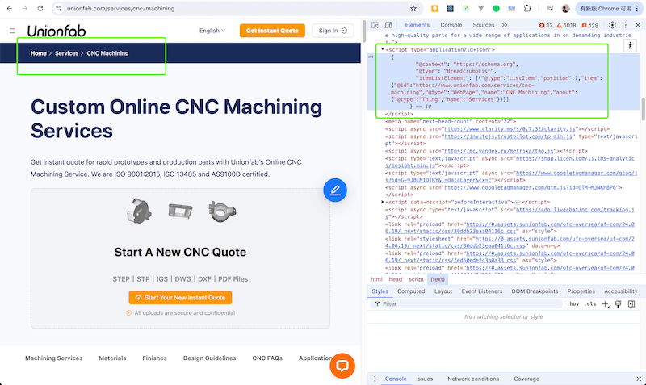
这两个功能总是同时出现在一个页面中，并且只会出现一次，因此封装到了一个组件中。后续，可以继续优化该组件，例如添加属性，只生成 UI，添加另一个属性，只生成结构化数据，这样更灵活。
面包屑提供了两种用法，分别是配置式和行内式：
- 配置式就是在使用面包屑组件前，要先在配置文件中进行面包屑数据的配置编写，这个文件和面包屑组件在同一文件夹内，名称为
data.ts，data.ts的具体用法请查看面包屑组件的README.md； - 行内式，即无需考虑上面的配置文件夹，直接将面包屑数据作为属性传递给组件即可，使用起来很方便。
两种方法，按需考虑，未来如果行内式更方便可删除配置式，如果配置式更利于管理也可移除行内式。
结构化数据会体现在 Google Search Console 的路径面板，搜索引擎中，会展示在每个搜索结果的标题下面：
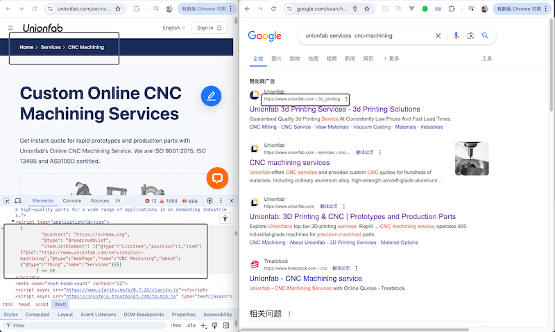
相关链接：Google 搜索中的结构化数据标记简介
SEO 数据和增量静态生成
SEO 数据通过接口获取，在保证页面 SSG 的前提，也要动态更新页面，所以使用了增量静态生成，但由于站点部署到了 3 个站点，增量静态生成不能同时更新这 3 个站点。具体的问题请查看上面“性能”一节的“营销页面的 SSG”，对问题做了详细解释。
Canonical link 标签
链接携带 query-string 不应该被收录，例如 www.unionfab.com?origin=xyz，这里需要为页面添加 canonical 标签设置一个页面的权威链接来排除这个问题。
通过谷歌 search console 找到哪些 query-string 链接被收录，进入“已编入索引的网页数量”页面，Ctrl/Cmd + F 搜索“?”即可：
| 第一步 | 第二步 | 第三步 | 第四步 |
|---|---|---|---|
| 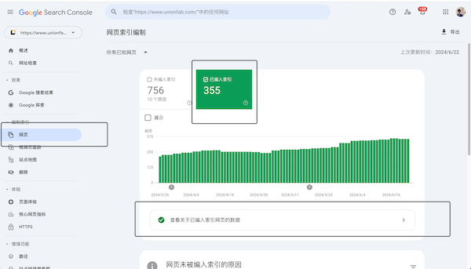 | 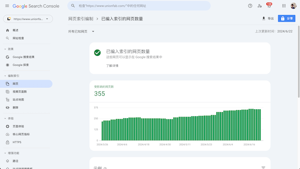 | 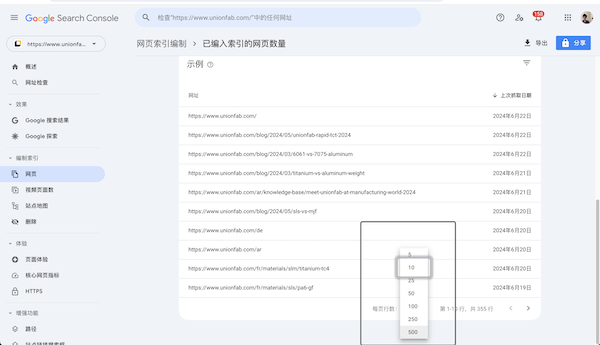 | 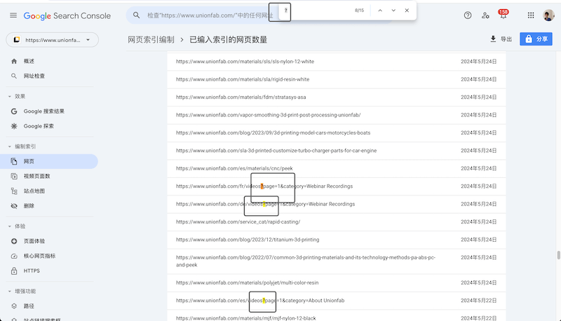 |
除了上面按需逐个页面添加 canonical 的方法，也可以提前在所有页面添加，在 _app.js 中添加。
可以参考 Apple 的官网，任意打开页面，切换不同的语言，打开开发者工具，在源码中搜索“canonical”。
Sitemap 站点地图
官网的 sitemap 可以从 packages/next/public/sitemap.xml 中看到：
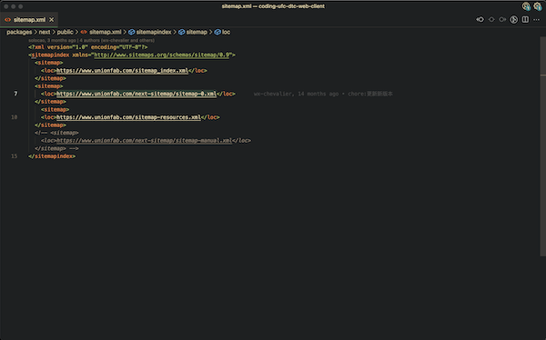
其中的 https://www.unionfab.com/next-sitemap/sitemap-0.xml 是由脚本生成的，脚本的路径是 packages/next/next-sitemap.js，生成的站点地图包含营销页的所有页面。
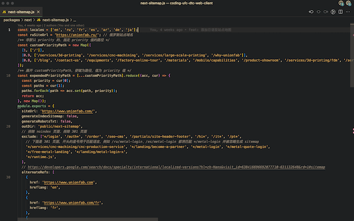
脚本里维护了一些东西，当新增或删减某个语言的时候做一些更改，例如下面图片里框选的 locales 数组：
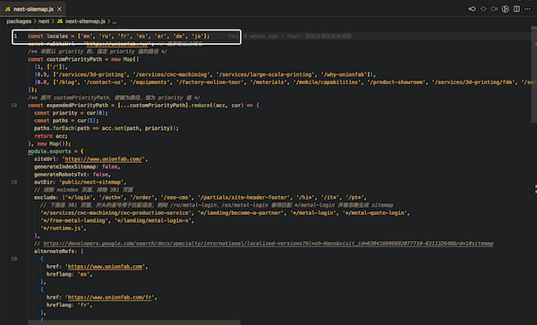
脚本里面，下面图片框选的函数，主要作用是避免生成错误的多语言路径，另一个作用是单独适配俄语的路径，因为俄语的域名不一样：
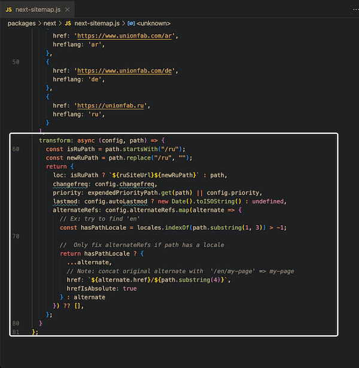
由于俄语的域名不同，导致站点地图在 Google Search Console 的解析出现错误：
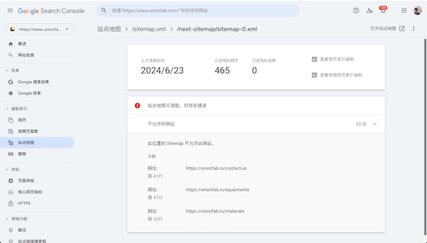
实际的站点地图会在打包之后生成，生成之后可以查看，或者也可以通过下面图片里的这个命令直接生成（npm run postbuild），可能有时会失败：
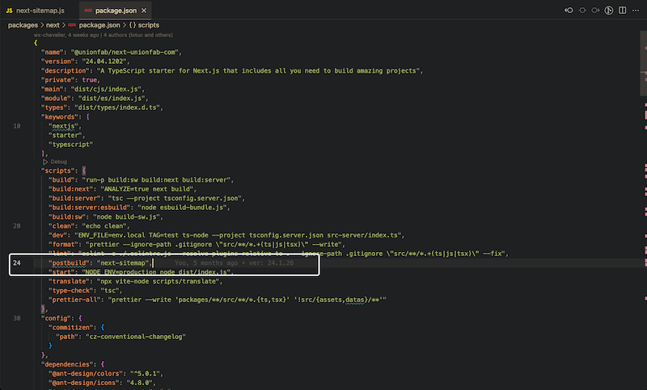
相关链接：将网页的本地化版本告知 Google——HTML 标记
alternate link 标签
alternate 有三种设置，分别是 <link> 标签、http 请求头和站点地图，这 3 种方法取一种即可，目前营销页通过站点地图设置 alternate，站点地图的 altenate 在 sitemap 脚本里自定义设置：
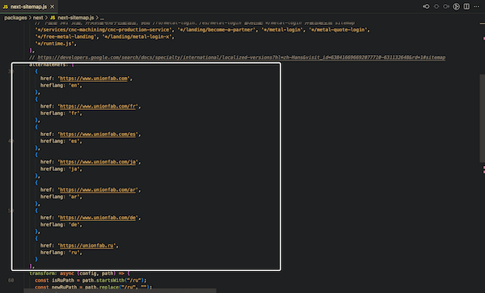
相关链接：将网页的本地化版本告知 Google
noindex 页面
添加 noindex meta 标签表示不希望搜索引擎收录，目前代码里有两种 noindex 方式，一种添加 noindex meta 标签，另一种在响应头中加 'X-Robots-Tag': 'noindex'。
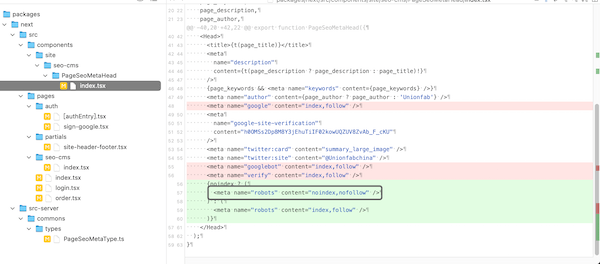
相关 commit hash：758099b2ab3c14e06a
使用 noindex 的页面不多，例如登录页、下单页，这些都可以从 SEO 一节开头的表格链接里找到。
有的页面单独维护响应头的 'X-Robots-Tag': 'noindex'，是因为这些页面不走 Next.js 的 SSR 或 SSG，是自己生成的 HTML 字符串内容返回给客户端。
301 跳转
项目里用了两种方式实现 301 跳转，一种在 Next.js 配置文件配置 redirects，另一种向客户端返回 301 相应代码。
配置文件配置 redirects
配置文件路径：packages/next/next.config.prod.js
配置是一个对象，对象里有一个属性 redirects，这个属性的值是一个函数，返回需要重定向的页面。
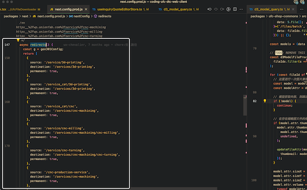
需要注意，不应该出现连续重定向或者经常改动重定向的情况，经常重定向可能不利于收录。
在这个配置文件里有一个辅助函数 gen301Config，可以用来生成 redirects 需要的结构，简化流程。
返回 301 响应代码
用在 Wordpress 博客页面（这些页面不是缓存到本地的，是线上的），unionfab.com 在访问博客页面的时候，会在 next 服务中拉取 Wordpress 的页面，获取到页面的字符串后，再和 unionfab.com 自己的头部、底部导航栏做拼接，最后返回给客户端。
由于 Wordpress 内容是在 next 服务里获取的，如果请求的 Wordpress 页面在 Wordpress 管理平台设置了重定向，用户在浏览器客户端是不能感知到的，因为用户拿到的是已经在 next 服务里重定向后的结果。
目前项目针对 Wordpress 页面的重定向要反映在浏览器重定向的需求，做了处理，会在 next 服务中，请求 Wordpress 页面时首先做 Head 请求，而不是获取完整的内容，如果获取的状态码是 301 重定向，则把这个 301 状态码的响应头直接返回给浏览器客户端，让浏览器继续重定向的操作。
下面的图片展示了代码在项目里大概的位置：
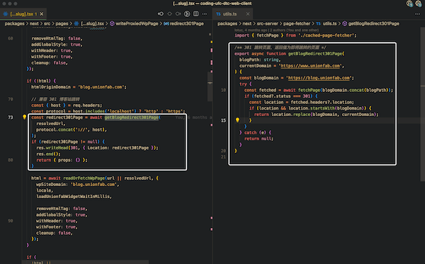
相关链接：next.config.js Options: redirects | Next.js
链接的 <Link>（<a>）标签
纯链接应该使用 <Link> 标签，不能使用点击事件进行跳转，纯链接有利于 SEO 内链。
Next.js 提供的 <Link> 组件，会在多语言的时候，自动插入多语言前缀，例如默认语言的路径是“/why-unionfab”，切换日语后，语言的路径会变成“/jp/why-unionfab”；第二，<Link> 组件支持平滑切换路由，无需刷新浏览器标签页；第三，默认进行页面的预加载。
这些特性，单独使用 <a> 不支持。
Next.js 12，在设置样式、或是设置 target 属性的时候，需要额外在 <Link> 组件内套一层原生的 <a> 标签，Next.js 12 以上的新版本不需要添加 <a> 标签。
导航栏有上百个链接，可能影响性能，所以关闭了大部分链接的预加载（prefetch）选项。